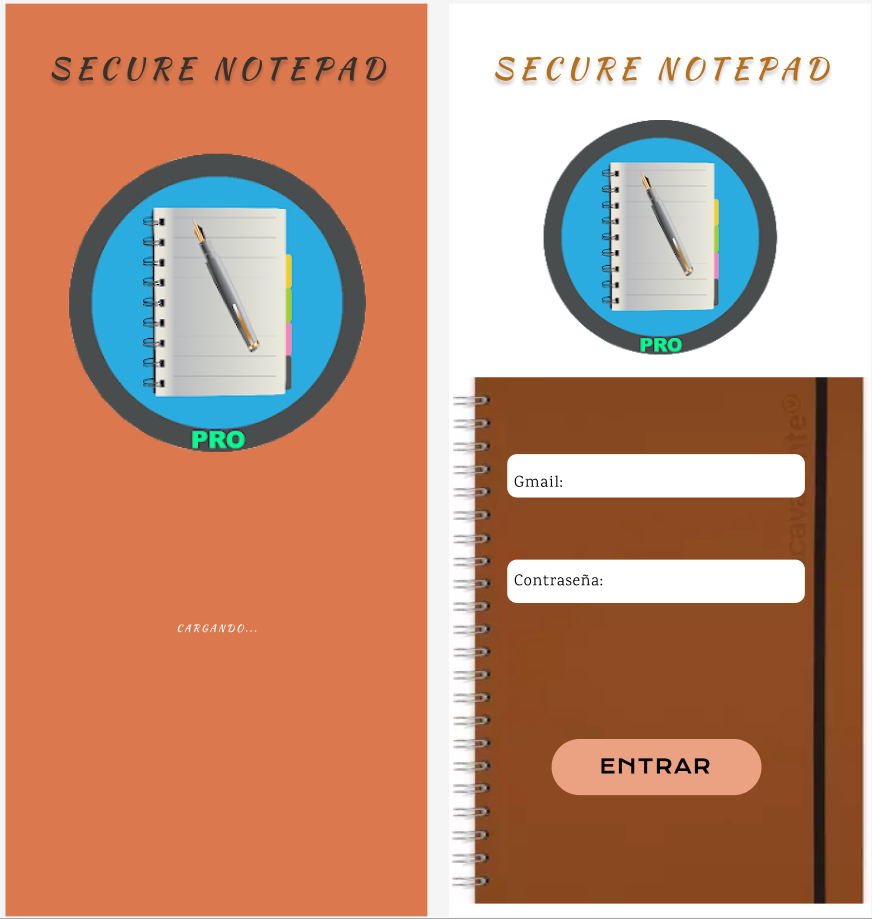
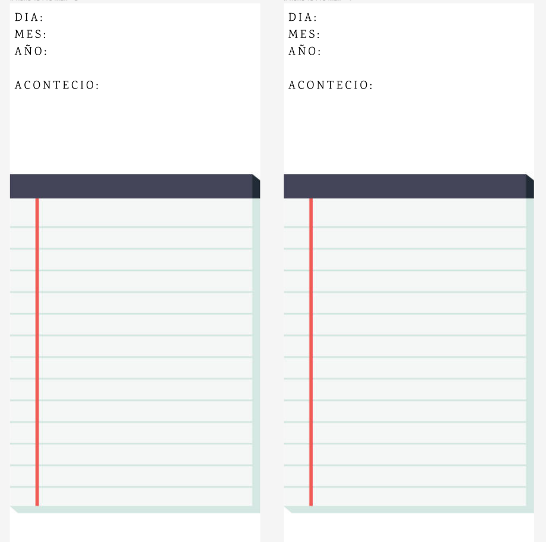

DESCRIPCION:
¿Por qué comprometer la seguridad de tus notas personales cuando puedes tener Notas Seguras?
Notas Seguras es la solución definitiva para todas tus necesidades de toma de notas y privacidad. Olvídate de preocuparte por quién puede acceder a tus pensamientos, ideas y notas personales. Con Notas Seguras, puedes escribir, almacenar y acceder a tus notas con total confianza en la privacidad y la seguridad.
CARACTERISTICAS PRINCIPALES:
Seguridad Robusta: Tus notas están encriptadas de extremo a extremo para garantizar la máxima seguridad. Ni siquiera nosotros podemos acceder a tus notas.
-Fácil de Usar: Una interfaz intuitiva y amigable hace que tomar notas y organizarlas sea un juego de niños.
-Bloqueo con Contraseña o Huella Digital: Mantén tus notas a salvo con opciones de bloqueo con contraseña o huella digital.
-Sincronización en la Nube: Accede a tus notas desde cualquier dispositivo, en cualquier momento. Sincroniza tus notas de forma segura en la nube.
-Organización Eficiente: Etiqueta y categoriza tus notas para mantener todo organizado y fácil de encontrar.
-Edición Rápida: Editar y formatear tus notas es sencillo con nuestras herramientas de edición intuitivas.
-Compatibilidad Total: Notas Seguras funciona en dispositivos iOS y Android, y también está disponible en la web.

SEGURIDAD Y PRIVACIDAD
En Notas Seguras, tu privacidad es nuestra prioridad. Utilizamos técnicas de cifrado avanzadas para garantizar que tus notas estén protegidas en todo momento. No almacenamos ninguna información personal y no compartimos tus datos con terceros. Puedes confiar en nosotros para mantener tus notas en total seguridad. Descarga hoy Notas Seguras y disfruta de la tranquilidad de saber que tus pensamientos están a salvo y accesibles solo para ti.